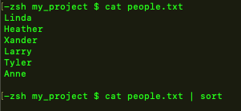
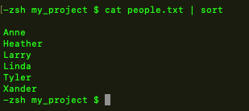
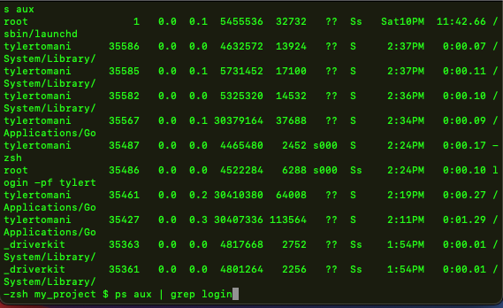
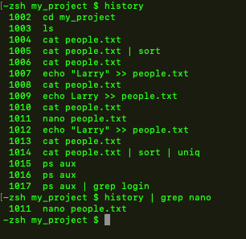

command | command
sends data from one command to another command using the pipe operator "|"
the output of command on the left goes into the input of the command on the right
 we can pipe in sucession multiple commands
a great example is sorted and removing duplicates
GREAT USE of PIPE
ps stands for "Process Step" and returns current users processes
ps aux returns all processes and who owns them
this is how we monitor what programs/processes are running
by piping ps aux into grep ps aux | grep login
we can see all programs being performed by those who are logged in
another useful use for piping into grep is searching history
just follow the grep command with what you are looking for
